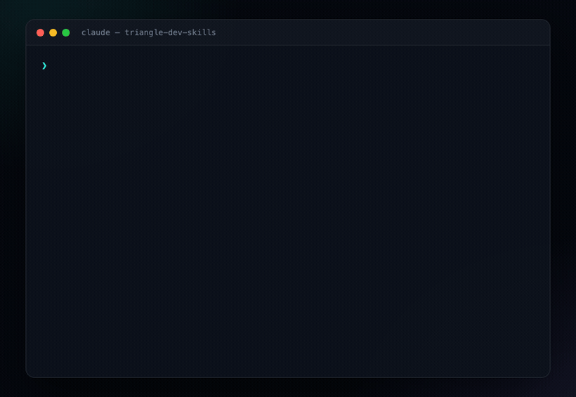
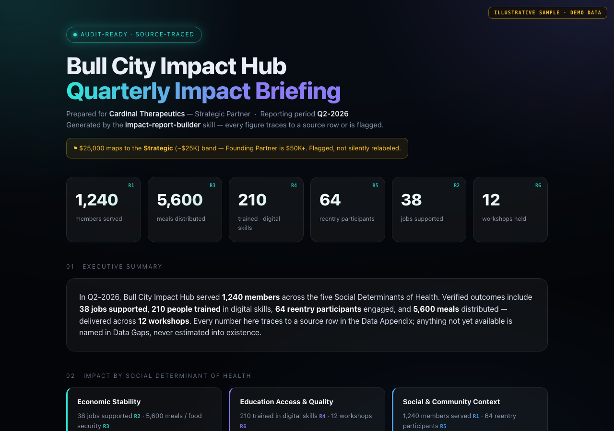

Three wedge skills for nonprofit development teams in North Carolina's Research Triangle — audit-ready impact reporting, regional funder intelligence, and bilingual EN/ES appeals. One shared knowledge base. One org brief auto-loaded into every session.
Normalizes program metrics to GRI/SASB/TCFD/SDOH and drafts an audit-ready partner briefing. Every figure traces to a source row or is flagged in Data Gaps.
Scores your org against a verified Triangle/NC funder list and researches new prospects live, with sources. Never invents a funder.
Transcreates appeals between English and Spanish — cultural transcreation, not literal translation — with a parity-QA pass.
Six raw member metrics → a board-grade, framework-mapped, source-traced partner briefing:


/plugin marketplace add ronanpinho-ipt/triangle-dev-skills /plugin install triangle-dev@triangle-dev-skills